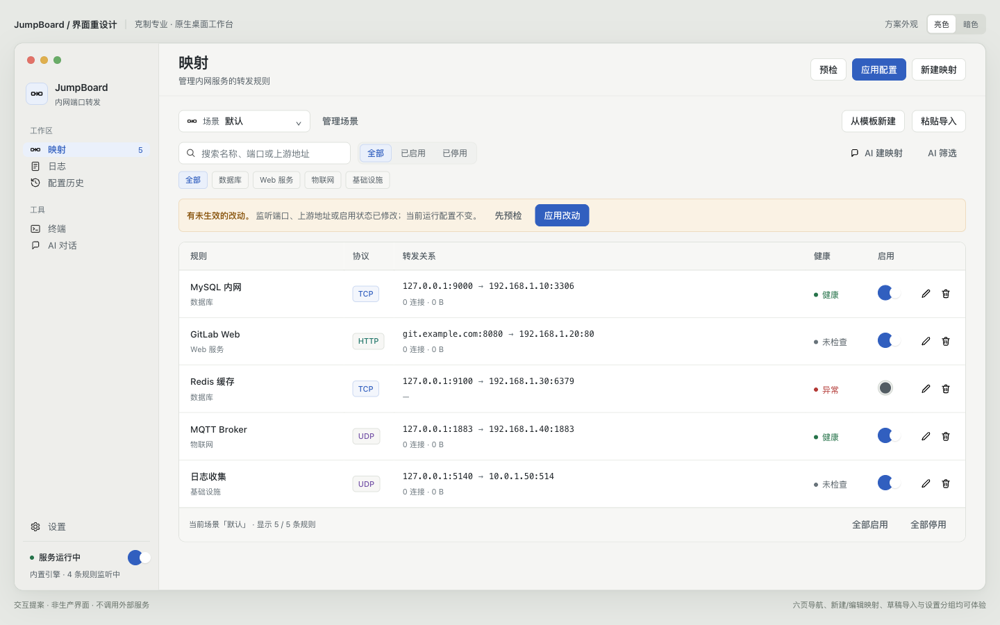
场景与创建一行，搜索与状态筛选拆分，分组芯片独立一行，单表格工作面。
解决：主次混乱、状态重复、上游地址重复。
克制、清晰的专业网络工作台。不是更花哨的控制台，而是重新分配已有功能，让“当前哪些映射生效、连接到哪里、下一步做什么”一眼可见。六个页面与全部业务能力保留，未添加新功能或开关。
每一页只解决一个问题。页面级动作在窗口栏，搜索与状态筛选在工具区，分组筛选独立成行，对象操作留在对象行。

场景与创建一行，搜索与状态筛选拆分，分组芯片独立一行，单表格工作面。
解决：主次混乱、状态重复、上游地址重复。
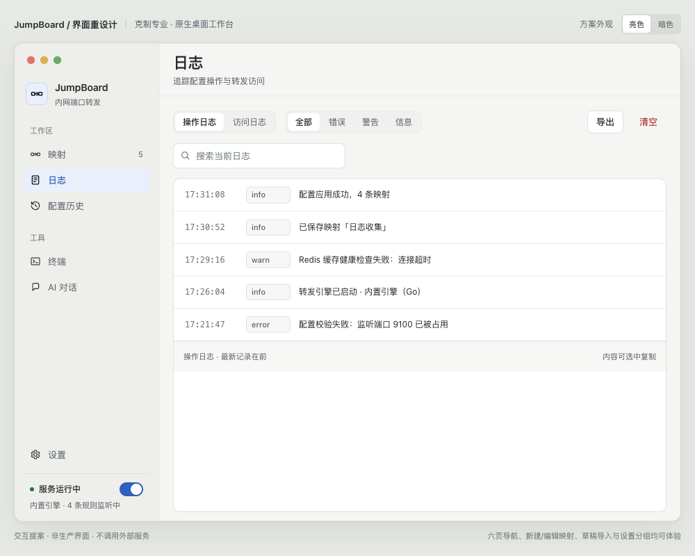
类型/级别/导出独立工具区，稳定日志流。
解决：工具混排、内容边界不清。
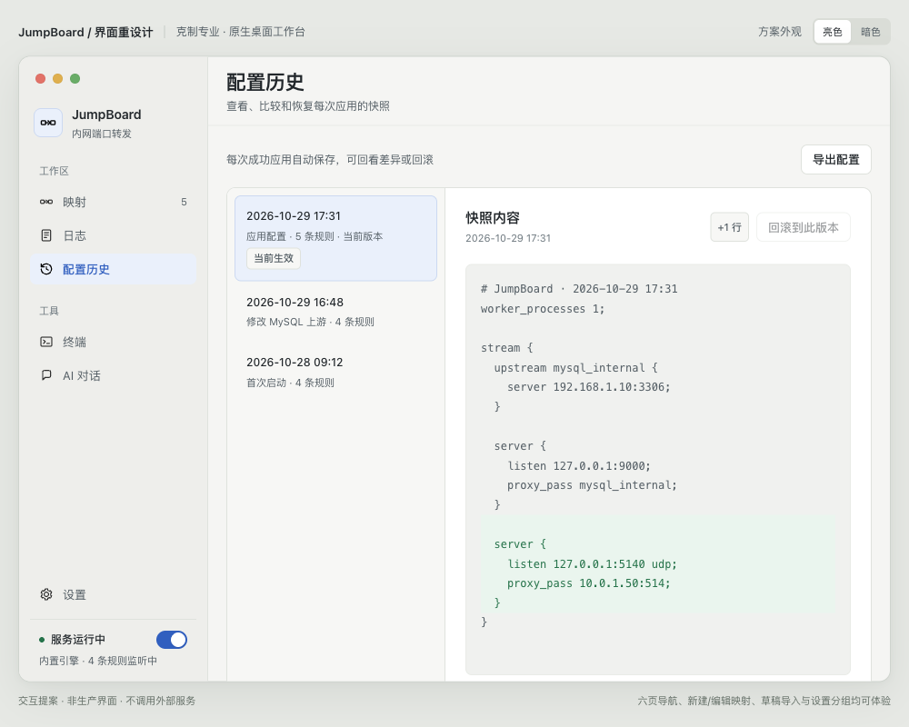
左侧快照，右侧配置与差异，回滚靠近对象。
解决：只有列表没有工作上下文，空白浪费。
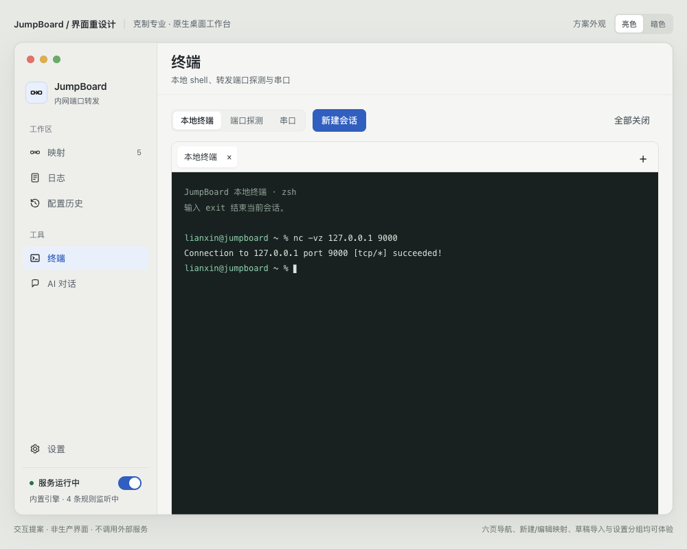
会话类型与新建在上，会话标签、终端和状态栏一体。
解决：空状态占据大卡片，会话缺少工作台骨架。
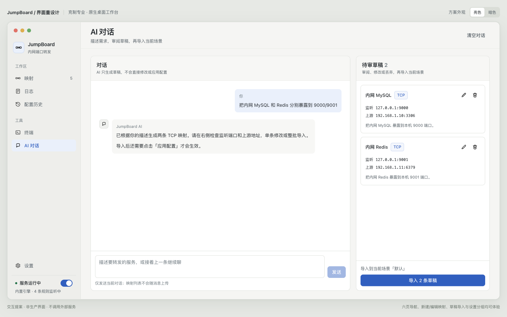
≥1120px 对话与待审草稿双栏，输入固定底部；<1120px 回落单列，草稿随对话滚动。
解决：草稿夹在聊天里，审阅与导入路径不清。
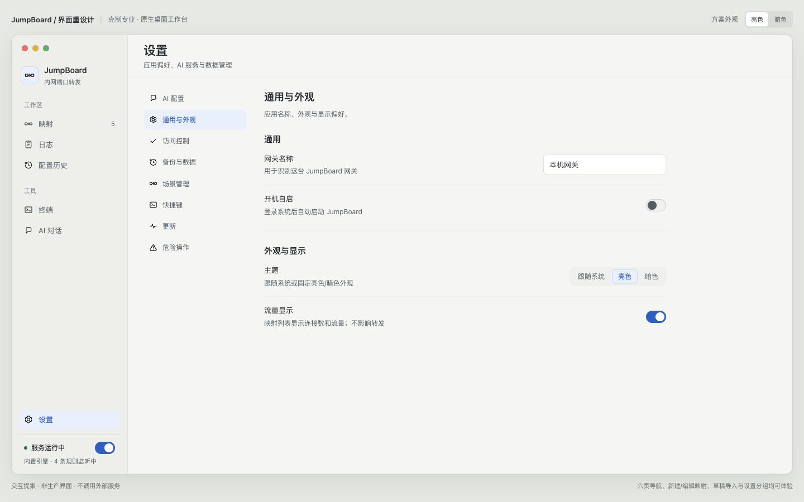
左分组导航，右侧一次一组表单。
解决：AI 占据首屏，多卡片堆叠、阅读顺序跳跃。
同一份数据、同一组能力。差别在信息层级与行为分区，而不在功能多少。
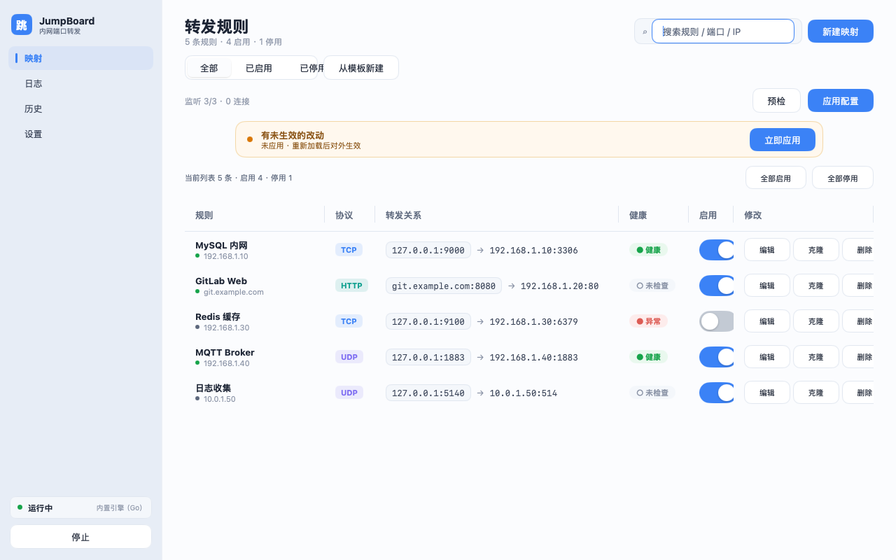
筛选与创建混排，行内三枚等权按钮，上游地址重复出现在名称下方与地址列。
创建留在窗口栏，筛选收进工具区，行内只保留启用开关与两枚图标操作，转发关系一行读完。
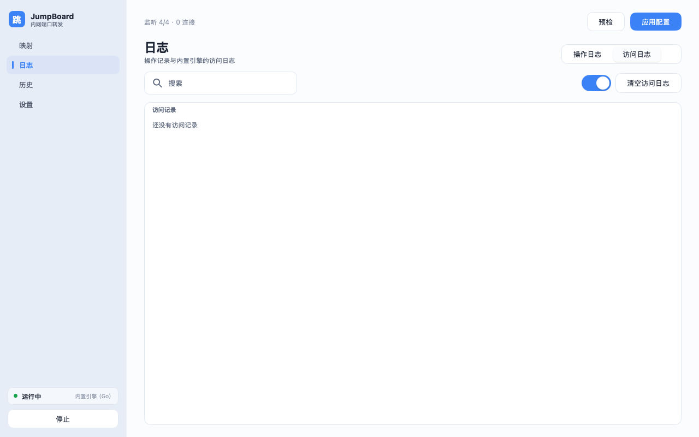
空状态占据整块面板，类型切换、开关与清空按钮分散在标题与工具区之间。
类型与级别各自成区，日志流有明确边界与页脚说明，导出与清空分开呈现。
一套令牌支撑亮暗两套主题。颜色只做语义，不做装饰。
暖白与石墨中性色构成 90% 界面。蓝色只用于主操作、当前导航与焦点；暗色主题改用浅蓝以保持对比。
系统 Latin + PingFang SC，无外部字体依赖。CJK 阅读行高 1.75；地址、端口、命令与日志使用系统等宽字体与表格数字。
4/8 网格，页面边距 28px，导航 208px，控件 32px，映射行 64px。一块边界清晰的工作面板胜过层层卡片。
同一套词表贯穿全局：运行中/已停止，健康/异常/未检查，已启用/已停用，未应用/已生效。危险操作说明后果，而不是问“确定吗”。
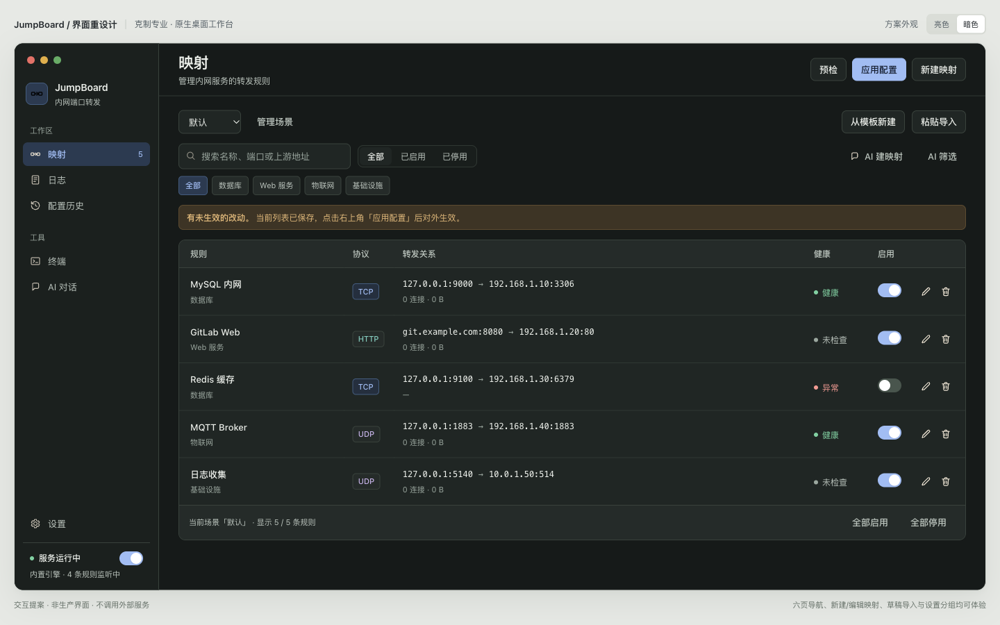
语义色换成深底浅色，面板与边界保持同一层级关系。
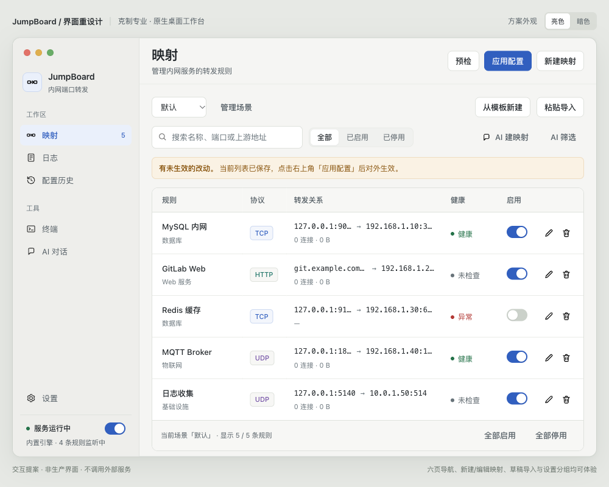
低于 1180px 减少非核心列，转发关系改为完整双行；低于 960px 侧栏收窄为图标导航。
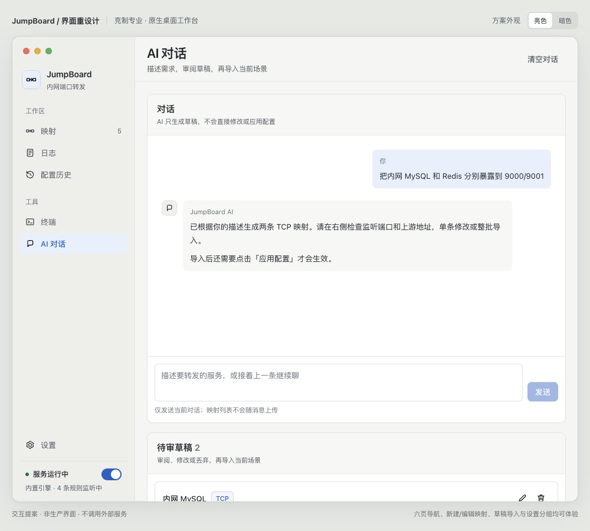
1120px 是 AI 页的分界：再窄时草稿栏读不全转发地址，因此回落单列，草稿随对话滚动。
每个断点只做一件事，不靠缩小字号换空间。
这是 HTML 高保真方案，不进入生产构建。生产界面仍是 Go + mygo。
不引入 Electron、Chromium 或 Node 运行时。组件、令牌与交互契约可逐页映射到现有 internal/ui/。
服务状态唯一放在侧栏底部，启停仍保留确认。顶部只放页面身份与当前页面动作。
单面板工作面；弹窗单层表面；危险操作明确说明后果。
现有所有 AI 隐私约束与导入校验不因视觉重排改变。
设计系统编译与只读检查：12 组件、17 示例卡、121 令牌，无检查问题。
先看映射页的表格与工具区，再看 AI 双栏和设置分组；最后比较亮暗主题。
方向确认后按“全局框架 → 映射 → 设置 → AI → 其余页面”的顺序实施。